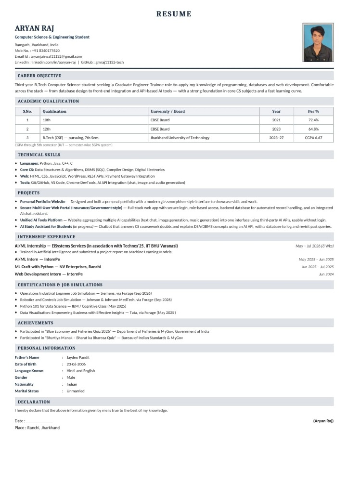

Engineering with Precision: From Raw Data to Strategic Intelligence
Hello! I am Aryan Raj, a final-year Computer Science & Engineering undergraduate (7th Semester) at Techno India University with an academic record of 8.0 CGPA, currently residing in Noida, Alpha 2, India.
Over the course of my engineering journey, I have cultivated a strong foundation in both core software engineering principles and modern data systems. While I have built full-stack applications and explored distributed architectures, my true passion and technical dedication lie in Data Science, Data Analytics, and Machine Learning.
In today's digital landscape, enterprise systems generate an unprecedented volume of data. However, data without context, structure, and rigorous statistical modeling is merely overhead. My engineering focus is centered on converting complex, unstructured datasets into clean, actionable intelligence that drives high-stakes business decisions, uncovers behavioral anomalies, and automates predictive workflows.
With hands-on experience gained from prestigious programs including the Eisystems & IIT BHU Artificial Intelligence Internship (Grade A), IBM AI & Prompt Engineering certification, and Tata Group Business & Data Analytics Simulation, I bring an analytical, disciplined, and code-first mindset to modern data teams.
Why Data Science & Data Analytics?
My technical toolkit is specifically structured around the end-to-end data lifecycle: from ingestion, cleaning, and exploratory data analysis (EDA), through statistical modeling, feature engineering, and predictive deployment.
1. Python & Scientific Stack
Proficient in writing vectorized, high-performance data processing pipelines using Python's primary computational packages.
2. Advanced SQL & Data Warehousing
Writing robust analytical SQL queries, executing complex multi-table joins, window functions, CTEs, and aggregation pipelines.
3. Data Visualization & BI
Communicating quantitative insights visually through interactive dashboards and publication-grade statistical charts.
4. Applied Machine Learning
Supervised and unsupervised learning, hyperparameter tuning, model evaluation (ROC-AUC, F1-Score, RMSE), and feature importance.
5. AI Integration & Automation
Integrating modern LLM APIs, vector representations, retrieval-augmented systems, and automated web scrapers for real-time intelligence.
Data Science & Analytics Project Roadmap
Because my primary career objective is securing high-impact roles as a Data Scientist or Data Analyst, I am actively engineering specialized end-to-end analytical solutions demonstrating full mastery of the data lifecycle.
Customer Churn & Lifetime Value Prediction Engine
An end-to-end predictive modeling system analyzing customer transaction history, contract length, and support logs to identify churn risks with precision. Includes feature attribution via SHAP values and an interactive web dashboard for business stakeholders.
Enterprise Sales Intelligence & Revenue Forecasting Pipeline
Relational data pipeline built on PostgreSQL featuring optimized CTEs and window queries to calculate rolling revenue, customer acquisition cost (CAC), and cohort retention. Integrated with statistical time-series forecasting to model projected Q4 revenue.
Autonomous Financial Document Query & Synthesis System
A Retrieval-Augmented Generation (RAG) assistant empowering analysts to query dense annual earnings reports, CSV datasets, and corporate filings using natural language queries, delivering cited metric extraction and tabular summaries.
Real-Time E-Commerce Sentiment & Price Optimization Engine
Automated web crawler scraping consumer product feedback and pricing shifts across e-commerce categories. Runs natural language sentiment classification to correlate customer satisfaction ratings with price elasticity thresholds.
Academic Background & Engineering Education
Bachelor of Technology (B.Tech)
Undergoing a rigorous 4-year engineering curriculum focused on algorithmic complexity, data structures, relational and non-relational database design, distributed operating systems, and statistical computation. Actively applying theoretical computer science principles directly to production-grade software and data systems.
Verified Professional Credentials Portfolio
Every credential represents completed hands-on coursework, industrial simulations, or university training verified by external industry bodies.
Eisystems & IIT BHU
Artificial Intelligence & Machine Learning Internship Certificate.
IBM & Coursera
Generative AI Foundations & Prompt Engineering Specialization.
Tata Group (Tata Steel)
Business & Data Analytics Virtual Experience Program on Forage.
Siemens & Forage
Engineering Design, Systems Modeling & Industrial Automation.
Hewlett Packard Enterprise (HPE)
Software Engineering Job Simulation: REST APIs & Unit Testing.
NIELIT (MeitY)
Cyber Security Practices, Network Defense & Data Privacy.
NPTEL & IIT Kharagpur
The Joy of Computing using Python & Data Science Fundamentals.
Great Learning Academy
Core & Advanced Java Programming, OOP, Collections & Streams.
Great Learning Academy
Relational Database Management, SQL Queries & Schema Design.
HackerRank Skills Certification
Problem Solving (Intermediate) & Python Algorithms Verification.
Bureau of Indian Standards (BIS)
Standards Writing Competition & Technical Compliance Leadership.
Skill India & NSDC
Full Stack Web Engineering & Modern Internet Technologies.
Aryan Raj — Curriculum Vitae
High-resolution document formatted for corporate recruitment and technical evaluations.

Let's Engineer the Future Together
I am actively seeking Data Scientist, Data Analyst, and Software Engineer / GET positions where I can apply rigorous analytical thinking, statistical modeling, and scalable coding to solve meaningful problems.